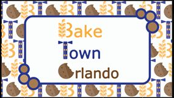
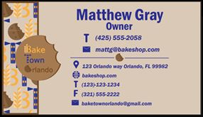
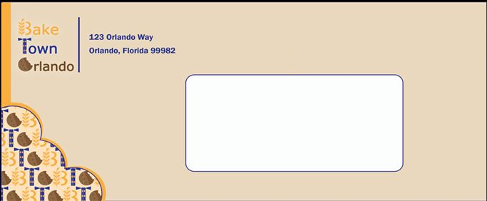

My Designs!
The front of a buisness card I've made while in school.
The back of a buisness card I've made while in school.
Front of an envelope I've made while in school.
My Portfolio!
Welcome to my portfolio! My journey into the world of design has been nothing short of eclectic, shaped by diverse experiences and a relentless passion for creativity. Let me take you through my path:
After graduating high school in 2016, I pursued my interest in beauty and aesthetics by attending a technical school to obtain my Esthetician's license. While delving into the world of skincare and beauty, I discovered my fascination with the intricate world of digital technology and cybersecurity. This curiosity led me to embark on a course in Cybersecurity, where I honed my skills in data protection and network security.
However, my heart was ultimately drawn to the dynamic realm of graphic and interactive design. Currently, I am pursuing an Associate's degree in Science, specializing in Graphic/Interactive Design. Throughout my academic journey, I have immersed myself in a multitude of design tools and software. In high school, I obtained certifications in Adobe Photoshop, Illustrator, and Premier Pro, laying the foundation for my proficiency in these essential design platforms. In my current classes, I continue to expand my skills in Adobe Photoshop, Illustrator, and InDesign, pushing the boundaries of creativity with each project. I have also begun exploring HTML coding with VS Code.
In addition to these industry-standard tools, I am also well-versed in Canva, leveraging its user-friendly interface to create compelling marketing materials such as brochures, business cards, and flyers. My experience extends beyond the classroom; I have had the privilege of managing social media accounts and crafting marketing collateral for various employers. This hands-on experience has equipped me with the ability to communicate effectively with clients and tailor my designs to meet their unique needs and preferences.
As a designer, I pride myself on staying ahead of the curve, constantly seeking inspiration from emerging trends while infusing my work with a style that is uniquely mine. My portfolio is a testament to my dedication to pushing the boundaries of design, creating visually stunning experiences that captivate and engage audiences. Thank you for taking the time to explore my work—I look forward to connecting with you and bringing your vision to life!
List of Programs I'm Proficient in!
- Adobe Photoshop
- Adobe Illustrator
- Adobe Premier Pro
- Canva
- VS Code